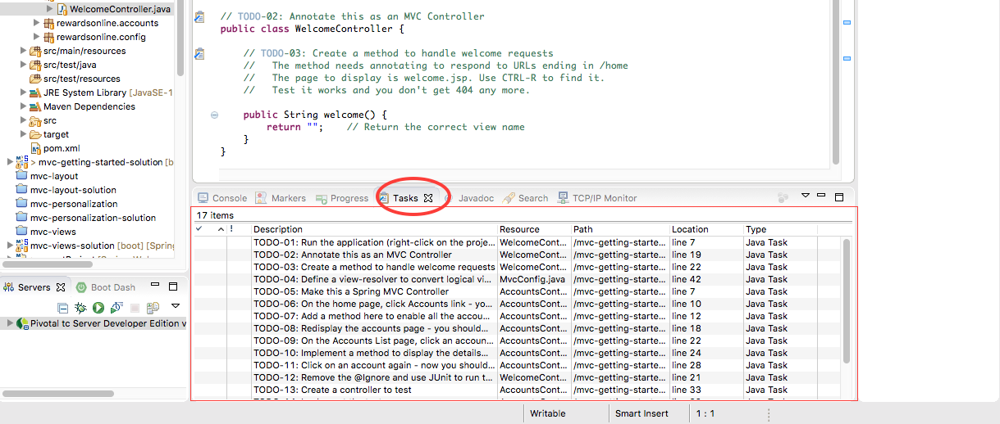
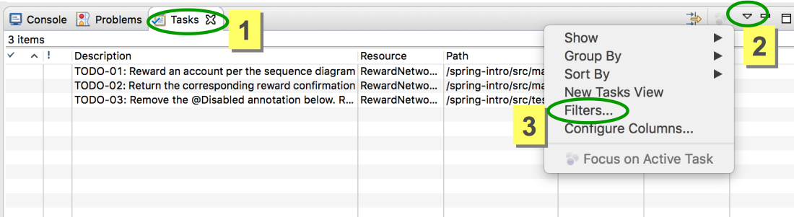
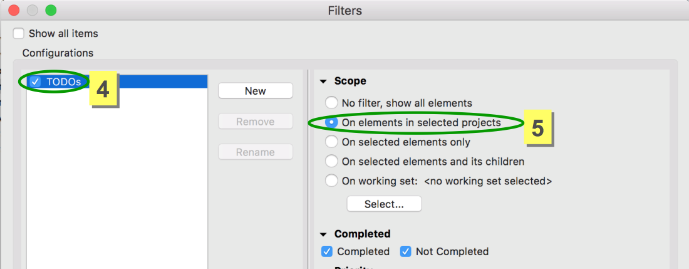
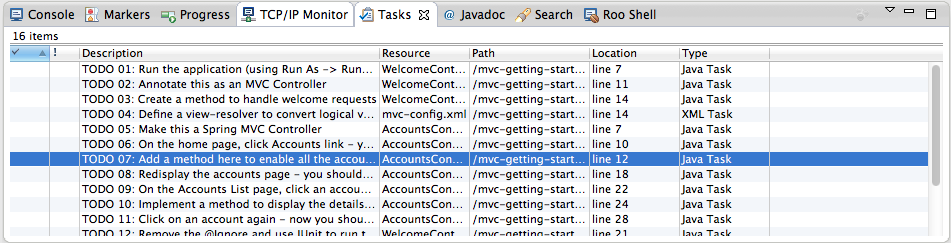
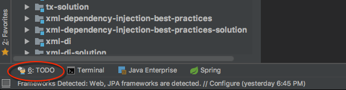
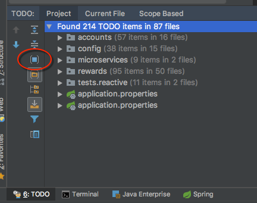
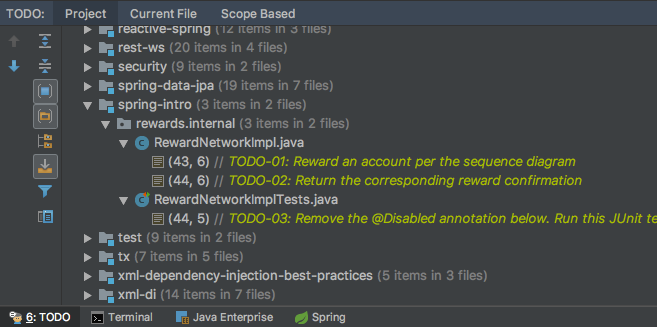

Purpose
In the labs, you will often be asked to work with TODO instructions. If you have a good understanding of the material, following the TODOs is more challenging and involves less reading than following the detailed instructions.
This appendix page will assist in configuring the TODO view for your particular IDE.
Configure TODOs in STS
In Eclipse and STS, the TODO tasks are displayed in the Tasks view,
usually in the central panel at the bottom (along with the Console and
Progress tabs).
You should see something similar to the figure below.

If not already displayed, click on Window -> Show View -> Tasks (be
careful, not Task List). If you cannot see the Tasks view, try
clicking Other ... and looking under General.
By default, you see the TODOs for all the active projects in Eclipse/STS. To limit the TODOs for a specific project, execute the steps summarized in the following screenshots:


Important points to note
- It is possible, you might not be able to see the TODOs defined within resources such as HTML or XML files. The TODOs are numbered - as you do each lab, check to see if any are any missing.
If so, check the configuration in
Preferences -> General -> Editors -> Structured Text Editor -> Task Tags
pane.
Make sure Enable searching for Task Tags is selected.
-
On the
Filterstab, verify all content types are selected. -
In case of Eclipse refresh issues, click on the
Clean and redetect Tasksbutton. ClickApplyand wait 3-5 seconds to see if it works. -
As a last resort, you may have to uncheck and then check again. The "Enable Searching for Task Tags" check-box. Click
Applyeach time you change its value. The TODOs may take a few seconds to appear, so again wait 3-5 seconds to see if it worked or not. -
If you still have no luck ask your instructor.
You should now see something similar to the figure below.

Configure TODOs in IntelliJ
In the IntelliJ IDE, the TODO tasks can be enabled in a couple of steps.
- Locate the TODO panel button in the lower left corner of the IDE work area and click it. Alternatively, use the shortcut Alt+6 or ⌘+6 on Mac.

- Locate the Group By Modules button on the left menu of the TODO area and click it. Alternatively, click Alt+M or ⌘+M* on the Mac.

From here, you can locate the module for the current lab you are working on and expand that and the files below the module you expanded to see all the related TODO steps for that module.

Guidelines to using TODOs as Quick Instructions
Each TODO will have a header referenced in the lab instructions. If you wish to review the associated detailed instructions, you may find on the associated lab instruction page on the course site.
It is critical to follow the TODO steps in the order they appear. Do not jump ahead to later TODOs in the same file or some features of the lab won’t work as described.